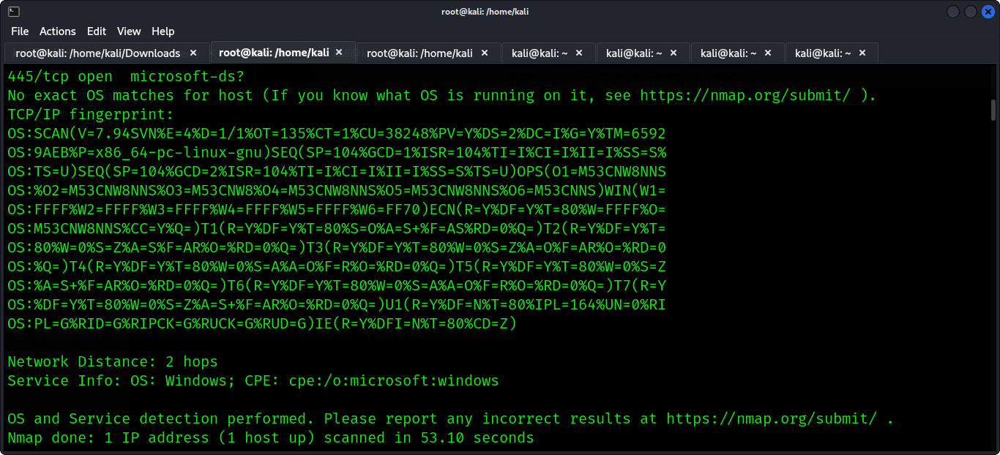

First is information gathering
but first you connect to a vpn file
be a root
sudo su
then give the password
then you have to ping to or greet the target machine to see if it is there
ping 10.129.223.192
jjj
using nmap then is scan target machine
nmap -sV -O 10.129.223.192 -sV specifies the version and -O specifies the OS IT is using
jjj
smbclient -L //10.129.223.192 --option="client min protocol = SMB2"
smbclient this command is used to access CMB/CIFS resources on server
-L This command list shares available in a specified server
//10.129.223.192 the ip of the the target machine
// this indicate the beginning of server address
--option="client min protocol = SMB2 this command set the option for the smb client
specifically setting smb minimum protocal version for SMB2
This is specifying that the client should use at least the SMB2 protocol when communicating with the server.
So, when you run this command, smbclient will attempt to connect to the specified server (10.129.223.192), and it will request a list of available shares using the SMB2 protocol or a higher version if available.
Then you can use tools like enum4linux to enumerate users and other information from the SMB service. The command would look something like this:
you can sudo if you like
enum4linux -U -S -G -H -o 10.129.223.192
-U: This option tells enum4linux to enumerate users.
-S: This option instructs enum4linux to enumerate shares.
-G: This option is for enumerating groups.
-H: This option performs a basic password policy retrieval.
-o 10.129.24.33: This specifies the target IP address (or hostname) to perform the enumeration on. In this case, the target is 10.129.24.33.
When you run this command, enum4linux will connect to the specified IP address (10.129.24.33) and attempt to gather information about users, shares, groups, and the password policy on the target system.
Here's a brief explanation of what each enumeration option does:
User Enumeration (-U): Enumerates information about users on the target system.
Share Enumeration (-S): Lists information about available shares on the target system.
Group Enumeration (-G): Retrieves details about groups on the target system.
Password Policy Enumeration (-H): Retrieves and displays basic information about the password policy on the target system.
After running this command, enum4linux will provide you with information about users, shares, groups, and password policy on the specified target system. This information can be valuable for further penetration testing and assessing the security of the system.
enum4linux -U -S -G -H -o 10.129.223.192
then you can connect to the client machine using the smbclient command and give the username you found using enumlinux and password
smbclient //10.129.223.192/WorkShares -U root -----Workshares is the sharesname you found in the machine if it has a dollar sign it means you cannot acces with a blank password but if no dollar sign means you can access with a blank password
That shows i was able to access the machine see the files and downloaded them using the get command to my current working directory folder also ls list the files and folders in the target machine ie flag.txt and worknotes.txt
great hacked the machine